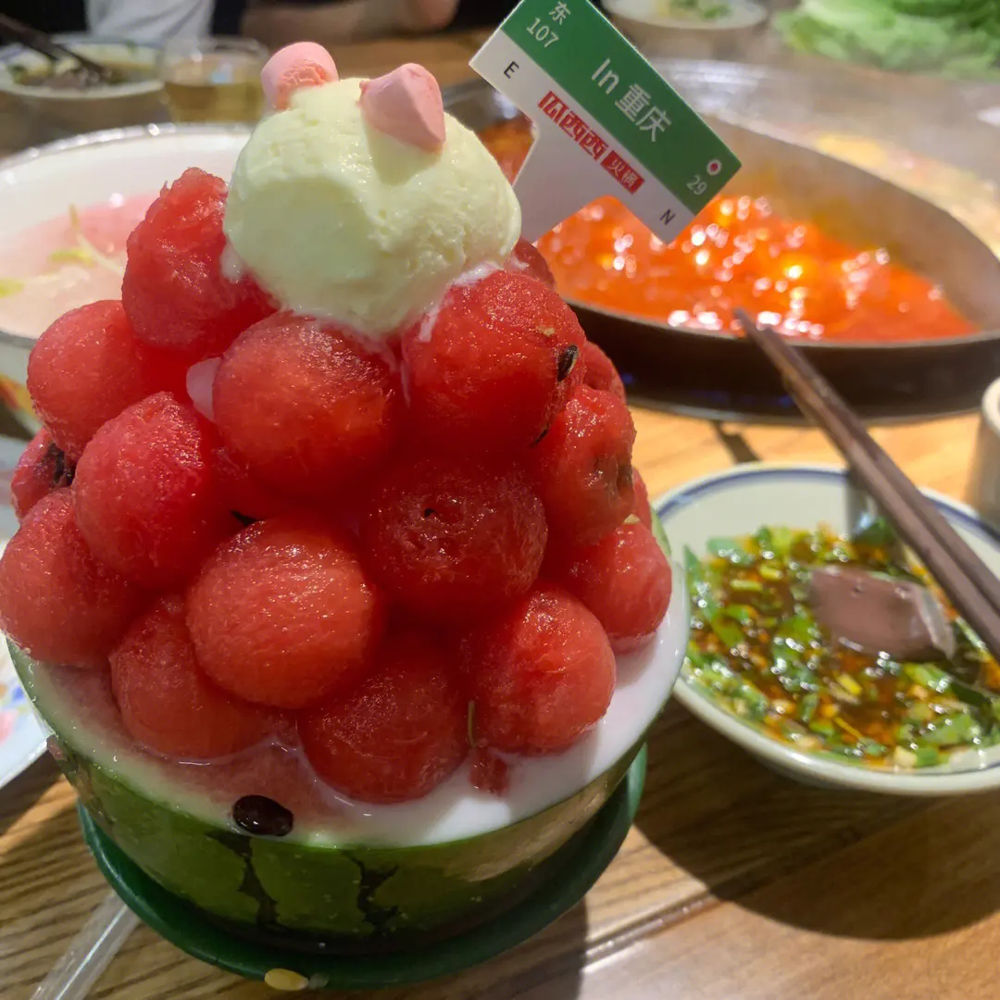
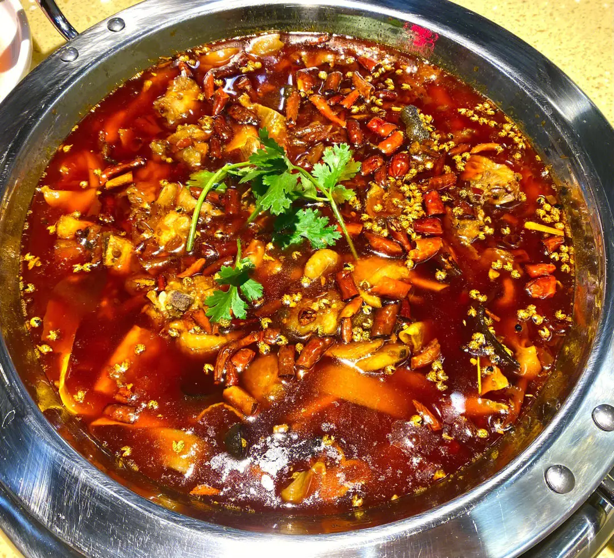
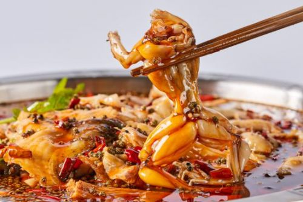
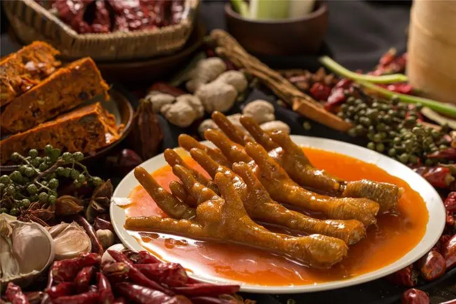

瓜西西火锅以其地道的口味、新鲜的食材和多种调料搭配方式， 吸引了众多消费者的关注和喜爱，瓜西西火锅不仅传承了川渝火锅的精髓， 同时也注重创新和改进， 为顾客带来更加优质的用餐体验。

肥肠鸡是一道以肥肠和鸡肉为主要原料的川菜，制作过程中， 通常会加入适量的豆瓣酱、姜片、蒜末、花椒等调料， 以及适量的香料和中药材，使得其味道更加鲜美，且具有一定的食疗作用。

美蛙肥肠鱼不仅口感独特，而且营养丰富。牛蛙和鱼肉都是富含蛋白质和微量元素的食材，有助于增强体力和提高免疫力。 而肥肠则含有丰富的胶原蛋白和脂肪，对皮肤保健和心血管健康有一定的益处。

胡记蹄花汤是一道传统的川菜口感鲜美，营养丰富，特别适合冬天食用。 蹄花具有丰富的胶原蛋白和脂肪，有助于皮肤保健和心血管健康。 豆腐则含有丰富的蛋白质和微量元素，有助于增强体力和提高免疫力。

降龙爪爪以鸡爪为特色，采用多种中药材和调料，经过数小时的熬制， 使得鸡爪鲜嫩可口，入口即化。除了鸡爪外，降龙爪爪还推出了各种美食， 如降龙爪爪煲、降龙爪爪小串、降龙爪爪豆干等
还有很多美食等待大家来重庆品尝
- 大王油茶
- 现炸酥肉
- 酸辣粉
- 掰抄手